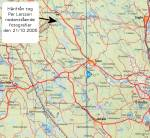
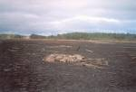
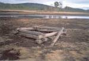

- efter det att dammen gått sönder
Fotografier tagna av Per Larsson den 21/10 2005
[Klicka på bilderna för att förstora]

Karta som visar var fotografierna togs.

Sannolika odlingsrösen,
nu på Bresiljans
botten.

Av någon anledning ofylld
stenkista sedan
flottningen
- sänkte man den och hittade
den inte sedan?? I bakgrunden
Präståsen
med gård.

Stenkista sedan
flottningen,
i bakgrunden
åflödet genom
Bresiljan samt Präståsen
med gård.

Stenkista sedan
flottningen.

Själva åflödet genom
Bresiljan
samt en
stenkista sedan
flottningen.

Dränkta gräsvidder, tidigare
slåtterängar,
i Bresiljan.
Stensamlingen, som innehåller
lite tegel, är troligen rester av
spisgrunden
till ett hus som
fanns här och inritad på en
sen 1700-talskarta.

Underlig stensamling, något
slag av
urgammal boplats?
En dränkt stubbe
och till
vänster, en raserad stenkista
sedan flottningen, till höger
ett odlingsröse?

Minne av tiden innan Bresiljedammen
byggdes och det växte träd på den
blivande sjöbottnen.

Sjunket timmer på
Bresiljans
botten, minne
av flottningen.
I bakgrunden till vänster
Präståsen med dess gård.

...och här fortsätter
forvägen
ut över Bresiljevidderna mot
Katrineberg och
vidare mot
Hällbo.

Med all sannolikhet den
gamla forvägen för
malm från Vintjärns gruva i östra Dalarna till
Hällbo masugn vid nuvarande Kilafors, sedd
där den kommer ut från myrmarkerna och
Kampåstrakten mot Bresiljan.